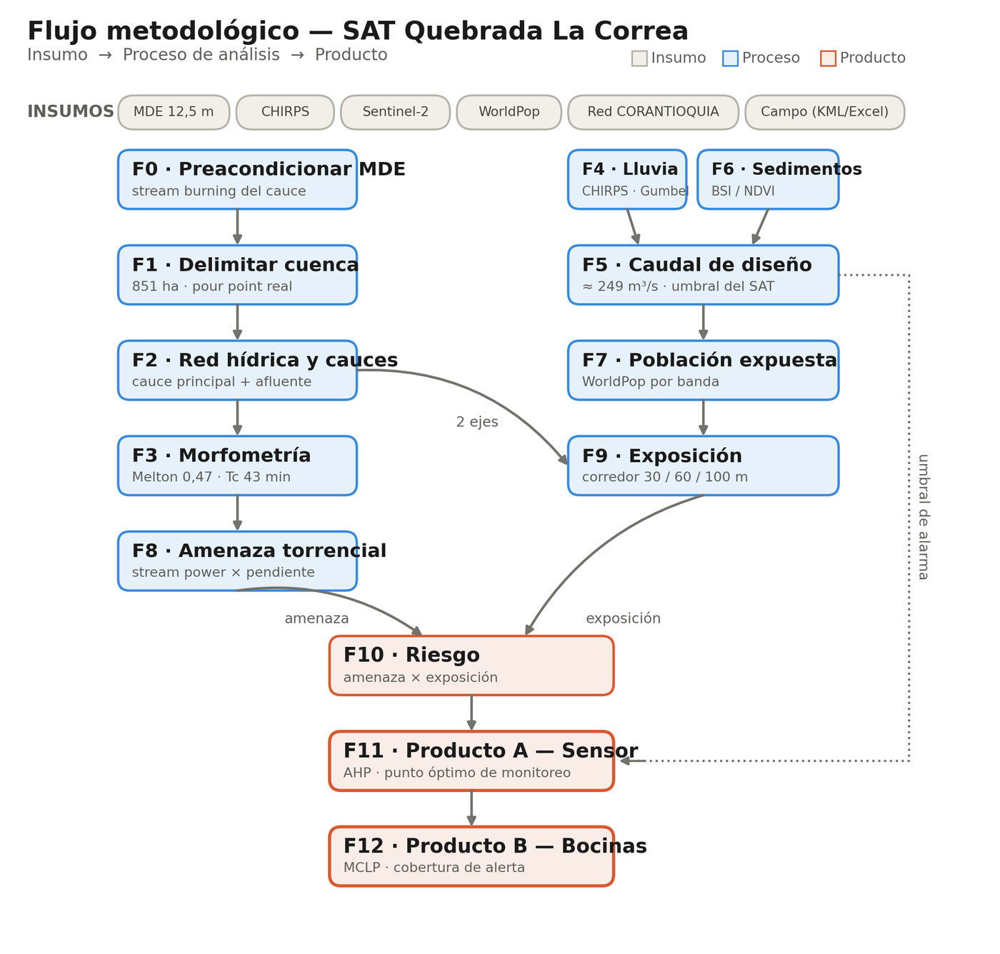
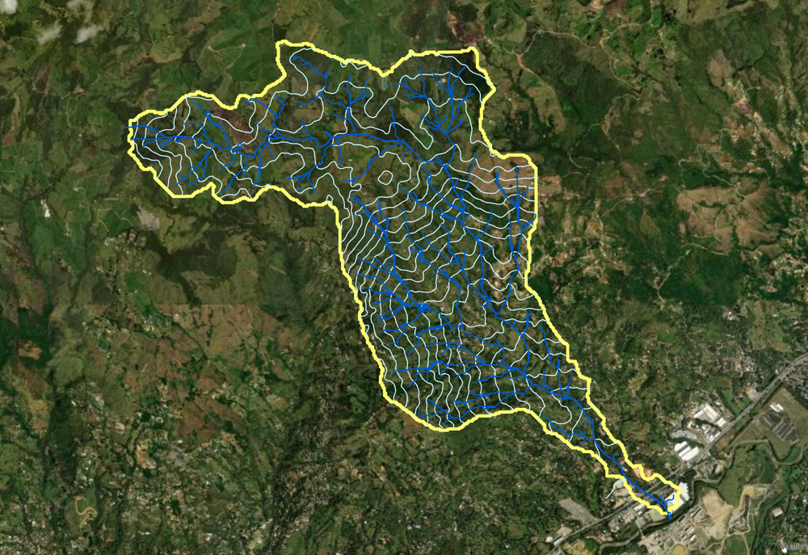
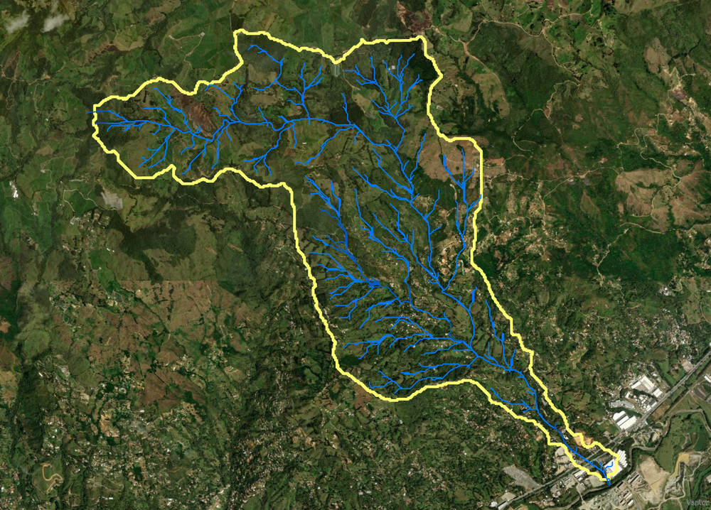
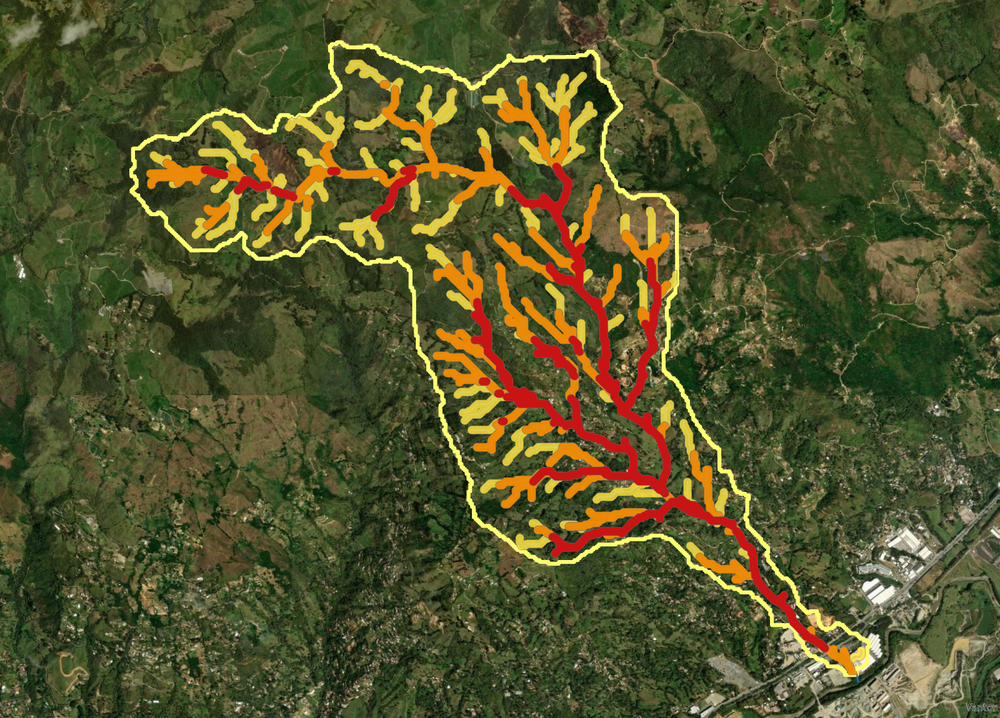
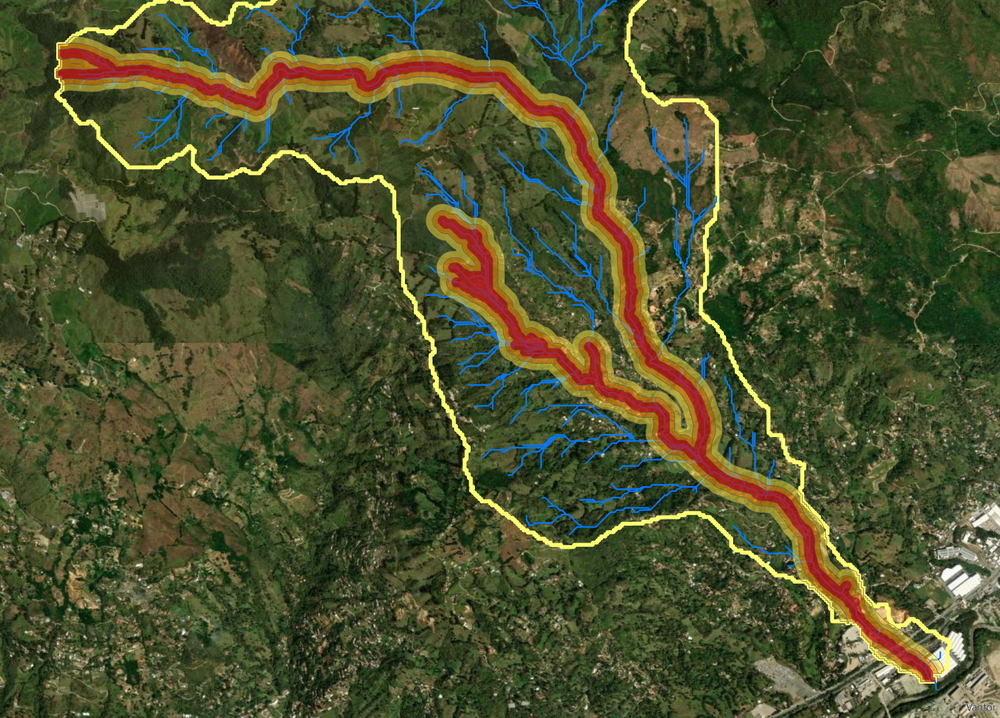
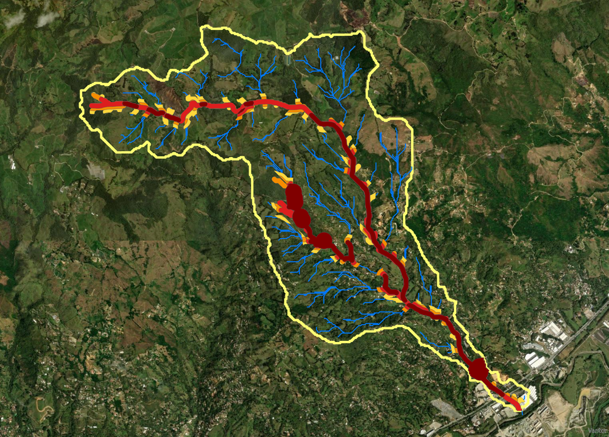
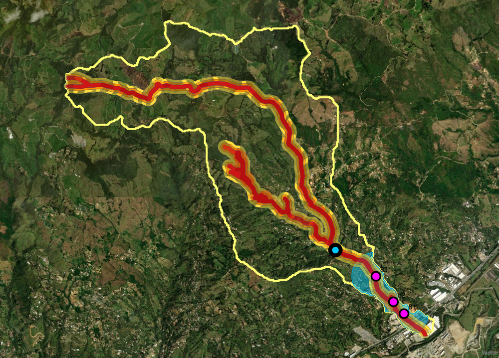

Avenida torrencial — Girardota (Antioquia) · resumen del análisis geoespacial y monitoreo en tiempo real
856,4
Área de la cuenca
ha · carácter torrencial
249
Caudal de diseño (Tr100)
m³/s · con abultamiento
43
Ventana de alerta (Tc)
min · Kirpich
0,47
Índice de Melton
debris flood (torrencial)
61
Elementos expuestos
inventario de campo
13
Elementos en riesgo crítico
4 alto · 17 medio-alto · 24 medio · 3 bajo
1
Estación de monitoreo
Producto A (AHP · P1)
3
Bocinas de alerta
Producto B (MCLP)
Monitoreo en tiempo real
Conectando…
Estado de la quebrada SIN DATO
—Nivel del agua (cm)
—Temperatura (°C)
—Humedad (%)
—¿Lloviendo?
—Última lectura
Lectura en vivo desde la API del sensor P1 (Render). El estado se deriva del nivel medido:
PREVENCIÓN ≥ 10 cm · CRÍTICO ≥ 20 cm. Si aparece "SIN DATO", abre este tablero con el servidor local
(proxy, puerto 8080) o publica la API con CORS.
Resultados del análisis
Elementos por nivel de riesgo
Elementos por categoría
Zonificación del riesgo (ha)
Caracterización morfométrica
2,27Coef. compacidad (Kc)
7,12Densidad drenaje (km/km²)
5Orden de Strahler
14,6%Pendiente del cauce
38,4%Pendiente media cuenca
1.378 mRelieve
8,32 kmLongitud del cauce
1,36Sinuosidad
Caudal de diseño y productos del SAT
💧 Caudal de diseño
Lluvia Tr100 (CHIRPS · GEV)80,2 mm
MétodoSCS · CN III
Abultamiento (bulking)×1,5
Caudal pico (Qp)≈ 249 m³/s
📡 Producto A — Estación P1
Coordenadas6,40700 / −75,44688
MétodoAHP (CR 0,008)
Capta ambos caucesSí
Tiempo de reacción3,4–7,9 min
🔊 Producto B — Bocinas
Número (MCLP)3
Cobertura vidas críticas100 % (≥70 dB)
Ubicaciónaguas abajo de P1
AnálisisKernel + soundshed
Flujo metodológico

Cartografía del análisis

1. Delimitación de la cuenca sobre el MDE

2. Red hídrica, cauce y afluente crítico

3. Amenaza por avenida torrencial

4. Corredor de exposición (30/60/100 m)

5. Zonificación del riesgo

6. Productos A y B (sensor + bocinas)
Geoportal interactivo
Mapa interactivo con todas las capas y la lectura del sensor en tiempo real.